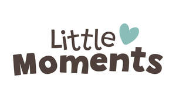

Trade Mark Journal No.2025/025 20 June 2025
UK00004203041 13 May 2025 (3,5,8,9,10,11,12,20,21,24,25,28,35)

- Class 3
- Laundry bleaching preparations; cleaning preparations; polishing preparations; scouring preparations; abrasive preparations; soaps; perfumery; essential oils; cosmetics; hair lotions; dentifrices; dentifrices for babies; toiletries; baby toiletries; baby soaps; baby shampoo; baby bubble bath; bath preparations for babies; baby oils; baby lotions; baby bubble bath; body washes for babies; liquid bath soap for babies; baby wipes; wipes for babies; cotton wool; cotton buds; baby talcum powder; hair lotions; oral hygiene preparations; cleaning preparations for the teeth; toothpaste; body sprays; perfumes; perfumed tissues; pre-moistened or impregnated tissues or wipes; tissues impregnated with cosmetic lotions; body cleaning preparations; bath preparations; baby body milks; non-medicated babies’ creams; non-medicated diaper rash cream; bath lotion for babies; non-medicated skincare oil for mothers; baby hair conditioner; sunscreen preparations; sun care preparations; skin cleansers and skin hydrators; skin moisturisers; preparations for the bath; bath salts, not for medical purposes; balms other than for medical purposes; cotton sticks for cosmetic purposes; cotton wool for cosmetic purposes; room fragrance preparations; fabric conditioner; detergent soaps; fabric softeners; fabric conditioners; laundry bleaching preparations; soap powder; washing powder; washing soda; laundry tablets for use in washing machines; soap tablets for use in washing machines.
- Class 5
- Disposable nappies; babies’ nappies; liners for babies’ nappies; disposable training pants [diapers]; Babies' swim diapers; teething gels; Pharmaceutical preparations; Sanitary preparations for medical purposes; nappy cream; dental preparations and articles; antiseptic mouthwashes; mouth rinses for medical use; absorbent articles for personal hygiene; absorbent cotton; first aid kits; adhesive bands for medical purposes; adhesive plaster; plasters, materials for dressings; air deodorising preparations; alcohol for pharmaceutical purposes; anti –septic cotton; antiseptics; douching preparations for medical purposes; preparations to facilitate teething; tissues impregnated with pharmaceutical lotions; disposable nappies made of cellulose; nappies for incontinence; cotton wool in the form of buds for medical use; towels impregnated with medicated or disinfectant lotions; impregnated antiseptic wipes; impregnated medicated wipes; skin care creams for medical use; skin care creams for babies; babies creams (medicated); medicated cream; medicated skin creams; nappy cream (medicated); sanitising wipes; moist wipes impregnated with a pharmaceutical lotions; antiseptic wipes; nursing pads; sanitary pads; incontinence garments; medicated balms; medicated nipple cream; cotton wool pads; baby ointments; nappy rash ointment; baby food; baby food (wet); baby food (dry); breakfast food in puree form suitable for babies and contained in pouches; puree for babies; food pouches for babies; baby food sold in bottles or jars; baby food sold in pouches; milk for babies and infants; milk powder for babies; infant formula; formula drinks for babies.
- Class 8
- Cutlery for babies or infants; Cutlery sets of plastic for babies/infants; spoons; cutlery; nail clippers; nail scissors; manicure sets.
- Class 9
- Thermometers; baby monitors; video baby monitors; life-saving and teaching apparatus and instruments; resuscitation mannequins (teaching apparatus); Fire-extinguishing apparatus; baby scales; baby sensors and alarms; light dimmers.
- Class 10
- Breast pumps; nipples shields; teething rings; dummies; soothers; baby feeding bottles; kits consisting of bottles and breast pumps; baby bottle teats; Apparatus for nursing infants; Post-operative pressure garments; Maternity belts; Latex medical gloves; Incontinence sheets.
- Class 11
- Sterilization, disinfection and decontamination equipment; Night lights, lighting apparatus; night time soothing lights; light projectors; microwave steam sterilisers; travel bottle warmers; toilet seats for children; bottle warmers; baby food warmers.
- Class 12
- Strollers; pushchairs; prams; covers and canopies for baby strollers; footmuffs for baby strollers; baby car seats; baby seats for vehicles; refill bags for nappy disposal systems; Rubber baby buggy bumpers.
- Class 20
- Baby changing mats; baby changing tables; mats for infant play pens; activity mats for babies; high chairs; booster seats; cots; carry cots; infant beds; bath slings for babies; bath seats for babies; seats with integral trays, for babies; seats for babies; baby/infant seats for toilets; maternity pillows; nursing pillows; baby food blenders; furniture; Step stools; stair gates; shelving; babies potties; body support pillows; cot bumpers; playpens; baby head support cushions; electric baby cradles; baby walkers; baby bolsters; Containers, not of metal, for storage or transport; storage boxes and baskets; toy boxes.
- Class 21
- Nappy disposal tubs of plastics; nappy disposal containers of paper and cardboard; training cups; water bottles; plates, saucers, cups, bowls, mugs, milk powder dispensers; potties; food blenders; children's potties; non electric food blenders; baby finger toothbrushes; baby baths; nail brushes; bottle brushes.
- Class 24
- Mattress covers; fitted sheets; cot sheets; Bed sheets of plastic, not being incontinence sheets; blankets for babies; bath towels for babies; hooded towels; muslin squares; sleeping bags for babies; burp pads; baby buntings; Curtains of textile or plastic; Diaper changing cloths for babies. .
- Class 25
- Clothing, footwear, headwear; Clothing for babies; clothing for infants; romper suits; onesies, sleep suits, vests, socks, mittens, cardigans, hats, shoes, bootees, bibs, all for babies and/or infants; baby sling t-shirts and jumpers (for baby wearing and carrying); baby nursing scarves; bras for breast feeding; plastic baby bibs; maternity wear; maternity bands; disposable aprons.
- Class 28
- Toys; Games; Playthings; Play mats; Toys for babies; playthings for babies; ride on cars, tractors, trucks for babies; tricycles for babies and/ or infants; rattles; baby bouncers; baby swings; baby gyms; crib mobiles; decorations for Christmas trees; toy projectors.
- Class 35
- Retail services, online retail services, mail order retail services and wholesale services connected with the sale of nursery and baby products namely toys, playthings, furniture, baby baths, baby gyms, baby wipes, baby nappies, baby bottles, baby dummies, baby strollers, cribs, bedding for cribs, baby changing mats, clothing, footwear and headgear, indoor play apparatus for children, storage racks and drawers, soft furnishings, cleaning materials, furniture, catering and cooking equipment, clothing, health and safety products for use in nurseries, disposable protective clothing; business planning; business acquisitions; business management; business administration; personnel , stationery and printed matter; business planning; business acquisitions; business management; business administration; personnel recruitment; preparing business reports; advertising services; marketing and promotional services; merchandising and branding services; product merchandising; market research services; organisation, operation and supervision of sales and promotional incentive schemes and customer loyalty schemes; on-line administration and supervision of discount, special offer and gift voucher schemes; organisation, operation and supervision of loyalty and incentive schemes in store and via the internet and mobile devices; inventory management services; computerised stock and inventory control; bookkeeping.
Findel Education Limited
Representative: Walker Morris LLP